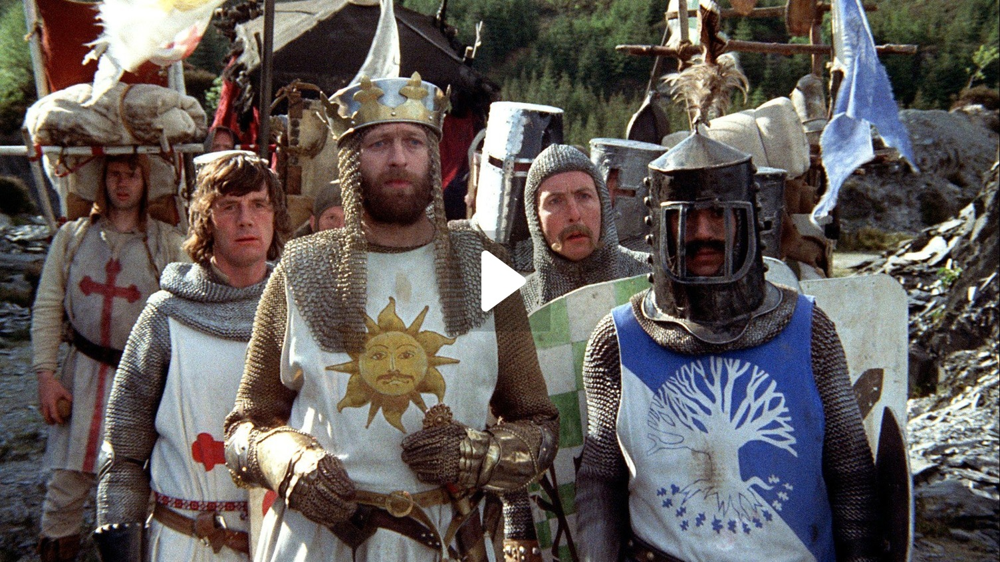
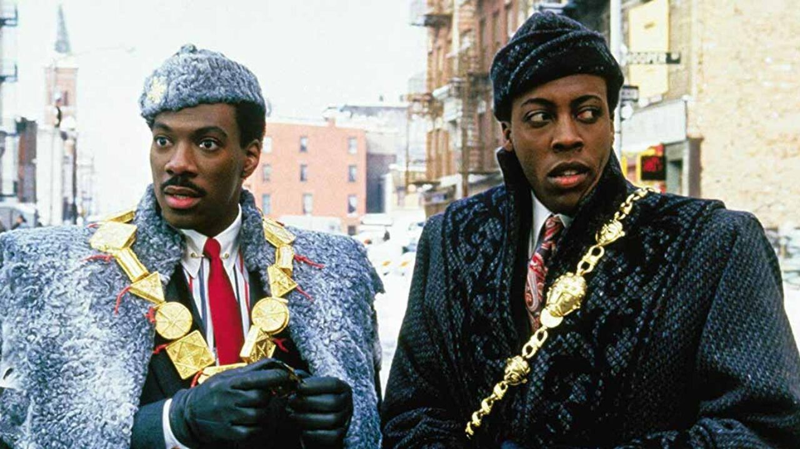

Virgen a los 40

Steve Carrell se luce en una comedia con personajes agradables y simpáticos pero con un humor ácido y juvenil. Un gran elenco y el toque personal del director Judd Apatow (escritor junco con el protagonista) la convierten en una de las comedias más memorables de la primera década del siglo XX.
Y donde está el piloto?
Si hubiera que definir la parodia en una película, esta sería. El humor absurdo marida perfecto con una historia bien contada y mucha química al frente y detrás de cámaras. And don't call me Shirley.
Loco por Mary
Probablemente la antítesis de Virgen a los 40. Aquí los personajes son mayormente desagradables y grotescos y aun así no podemos menos que alentar a un magnífico Ben Stiller a reconquistar su amor de juventud.
Austin powers

Otra parodia, pero en este caso de James Bond. Nos trae todo el glamour del espionaje y los años sesenta con personajes y citas memorables y una puesta en escena memorable.
Zoolander
Ben Stiller pero no haciendo de Ben Stiller. Desopilante elenco que critica pero al mismo tiempo festeja al jet set y la farándula fashion. Cuántas de sus escenas se habrían convertido en meme hoy en día?
Monty Python and the Holy Grail
Tienen que gustarte los Monty Python y su humor, que no podemos definir de absurdo por miedo a quedarnos cortos. La película épica menos épica y mejor contada de la historia.
Neighbors
Excelente comedia aunque no pasará a la historia, bien vale la pena ver la lucha entre un matrimonio joven y sus nuevos no tan buenos vecinos por ver quién prevalece (y la tiene más grande).
Guardianes de la galaxia

Uno de los más grandes y poco probables aciertos del MCU. Una familia un poco disfuncional en un mundo inmenso e imaginativo. Queremos más Star-Lord.
Hangover
El sueño (o la pesadilla?) de casi cualquier grupo de amigos. Ebrios y poco afectos a tomar las mejores decisiones, salvo darnos tres filmes para volver a ver.
Un principe en Nueva York
Volvemos a los 80 con un clásico del cine. Eddie Murphy quisiera poder volver a tener un éxito así, pero tendrá que conformarse con el recuerdo y una muy digna secuela.